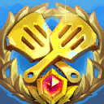

Prize money won$30,050all official events
AMER
Age 29United States
Michael k3soju Zhang
Pro player & streamer · TFT pro and streamer
- World titles
- – Tactician's Crown
- Best at Worlds
- 6th Space Gods
- Wins
- 2 official events
- Top 8s
- 10 official events
- Events played
- 21 official, since 2024
- Latest
- 6th Space Gods
- Next event
- – none announced
- Top 8 rate
- 48% 10 of 21 events

Teams
- Team VitalityJun 2024 – today
- DisguisedNov 2023 – 2024
- Cloud9Aug 2019 – Nov 2023
Offline
k3soju is offline right now
twitch.tv/k3soju
The player loads from Twitch only after you click “Watch here”. Twitch pauses embedded streams when you switch to fullscreen – press play once and it keeps running.
Who is k3soju?
k3soju (real name Michael Zhang) is an American TFT pro and one of the best-known streamers in the game. He has played for Team Vitality since 2024 after years with Cloud9, and organizes the K3Soju Invitational. In 2026 he won two Pro Circuit cups and finished 6th at the Space Gods Tactician's Crown.
k3soju's TFT tournament history
k3soju's selected finishes, newest first
| Date | Place | Tournament | Prize |
|---|---|---|---|
| 12 Jul 2026 | 6th | Space Gods Tactician's Crown World | – |
| 5 Jul 2026 | 3rd | AMER Regional Finals (Space Gods) Regional | – |
| 7 Jun 2026 | 1st | Anima Cup (AMER) Pro Circuit | – |
| 10 May 2026 | 1st | Stargazer Cup (AMER) Pro Circuit | – |
| 21 Sep 2025 | 3rd | Soul Fighter Cup (EMEA) Pro Circuit | – |
| 11 Aug 2024 | 3rd–4th | Esports World Cup 2024 Invitational | $11,250 |
| 20 Nov 2022 | 23rd | Dragonlands World Championship World | $4,500 |
| 28 Sep 2019 | 3rd | TwitchCon 2019 Invitational | $8,600 |